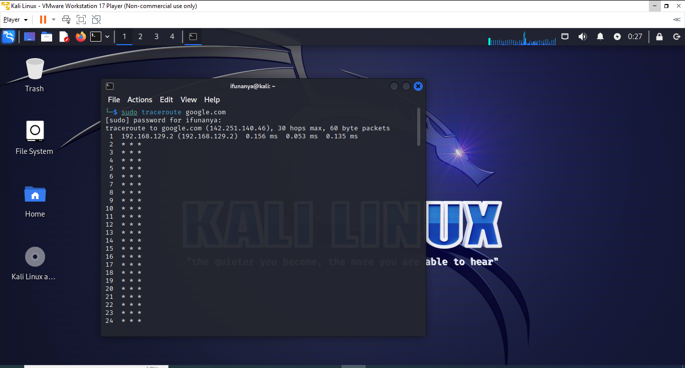

SCANNING ACTIVITY
While I carried out the scanning activity and did traceroute scan with the command (sudo traceroute) given in the note, just asterisks were displayed, so therefore I couldn’t view any hops. The website I’m tracing or scanning is google.com.
Because of this same problem, I wasn’t able to determine which step caused the biggest delay in the route, and also the average duration of the delay.
Domain Name: GOOGLE.COM
Domain ID: 2138514_DOMAIN_COM-VRSN
Registrar WHOIS Server: whois.markmonitor.com
Registrar URL:Registrar URL
Updated Date: 2019-09-09T15:39:04Z
Creation Date: 1997-09-15T04:00:00Z
Registry Expiry Date: 2028-09-14T04:00:00Z
Registrar: MarkMonitor Inc.
Registrar IANA ID: 292
Registrar Abuse Contact Email: abusecomplaints@markmonitor.com
Registrar Abuse Contact Phone: +1.2086851750
Domain Status:clientDeleteProhibited
Domain Status:clientTransferProhibited
Domain Status:clientUpdateProhibited
Domain Status:serverDeleteProhibited
Domain Status:serverTransferProhibited
Domain Status:serverUpdateProhibited
Name Server: NS1.GOOGLE.COM
Name Server: NS2.GOOGLE.COM
Name Server: NS3.GOOGLE.COM
Name Server: NS4.GOOGLE.COM
DNSSEC: unsigned
Server: 192.168.129.2 Address: 192.168.129.2#53